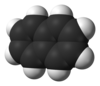

naphthalene

Definition: Naphthalene is an organic compound with formula C10H8. It is the simplest polycyclic aromatic hydrocarbon, and is a white crystalline solid with a characteristic odor that is detectable at concentrations as low as 0.08 ppm by mass. As an aromatic hydrocarbon, naphthalene's structure consists of a fused pair of benzene rings. It is best known as the main ingredient of traditional mothballs.
Source: Wikipedia
Wikipedia Page
Wikidata Page